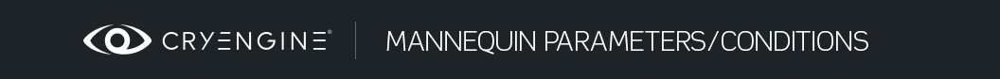

Обзор
Разделы
Редактор манекенов позволяет редактировать два разных типа параметров: «реальные» параметры манекена и параметры движения. Оба отображаются как параметры в редакторе манекенов, но внутри они совершенно разные.
«Реальные» параметры Mannequin
Это параметры, которые игровой код использует для предоставления дополнительной информации для игры. действия и процедурные клипы. Вот некоторые примеры: целевая позиция при выравнивании объекта в мире, значение веса при появлении или исчезновении анимации или звуковой параметр, передаваемый в звуковую систему.
Все параметры просто имеют имя и ценность. Тип значения может быть любым: от числа, указывающего положение/ориентацию в пространстве, до еще более сложных структур.
Однако в редакторе можно просмотреть только стандартное местоположение с именем «TargetPos», используя Параметры отслеживать в Mannequin Предварительный просмотр.
Если процедурный клип зависит от определенного параметра и определенного типа параметра, он документируется вместе с процедурным клипом, см. Каталог процедурных клипов.
Параметры движения
Параметры движения — это параметры, которые передаются в параметрическую анимацию. Смешать пространства.
Вы можете просмотреть, как эти параметры движения повлияют на вашу анимацию. добавив клавиши на трек с именем Параметры в Mannequin Предварительный просмотр. (см. также Mannequin Урок 2 по редактору – Теги и предварительный просмотр)